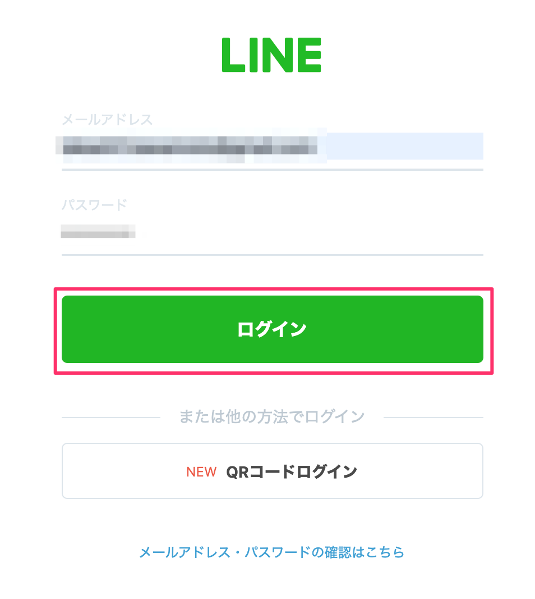
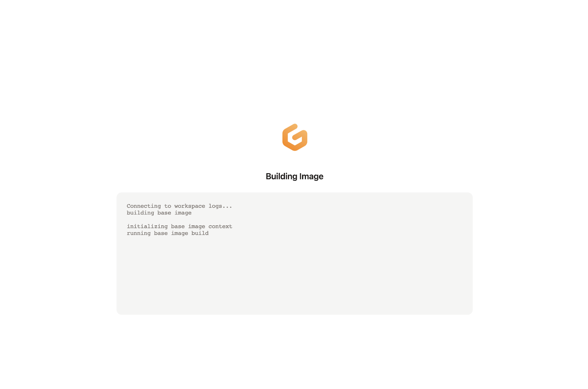

概要
WebアプリをLIFF化しながら色々と活用の仕方を妄想していただければと思います
当日の持ち物
- LINEがインストール済みのスマホ
- ChromeがインストールされたPC（Chromeのバージョンは最新のものを使っていただければと！）
事前準備
- GitHubアカウント作成
- Azureアカウント作成
- LINEアカウント作成(こちらのサイトでログインできるかどうかを確認ください)
使用するサービス・ツール
- Microsoft Azure Static Web Apps, Bicep
- Node.js
- Gitpod
- GitHub
構成図
注意事項
若干、Microsoft Azureの課金が発生する可能性があります。それ以外は課金など発生しません。
チャネルの作成スタート
https://developers.line.biz/ja/services/line-login/ にアクセス。
「今すぐはじめよう」のボタンを押して進めていきましょう。
「LINEアカウントでログイン」を押してください。

LINEのログインを求められるのでログインしてください。

チャネルの種類
Messaging APIになっているか確認します。
プロバイダ
既にプロバイダーを作っている場合 → 利用するプロバイダーを選択しましょう。

初めて → 新規プロバイダー作成を選択しプロバイダー名を入力しましょう。
（LINEという文字は含められません。）

地域、チャネルアイコン
地域は「日本」、チャネルアイコンを登録しましょう。（今回は必須ではありません）
チャネル名、チャネル説明
下記を入力しましょう。
チャネル名：「HappyHackLogin」
チャネル説明：「HappyHackLoginです」
アプリタイプ
アプリタイプは「ウェブアプリ」にチェックをつけましょう。
メールアドレス、プライバシーポリシーURL、サービス利用規約URL
メールアドレスを確認しましょう。
プライバシーポリシーURLとサービス利用規約URLは入力しないで大丈夫です。

作成ボタン
下記 開発者契約に同意し、チェックをして「作成」ボタンを押しましょう。
チャネル基本設定のリンクされたボット
LIFFの作成
「LIFF」タブに移動して「追加」ボタンを押しましょう。
LIFFアプリ名は「HappyHackLIFF」、サイズは「Full」を選択しましょう。
エンドポイントURLは仮で「https://example.com 」と入力します。URLが決まったら変更します。
Scopeは「profile」、「openid」にチェックをつけましょう。
ボットリンク機能は「On」にチェックをつけて、「追加」ボタンを押しましょう。
シェアターゲットピッカーの有効化
今回、Share Target Picker というLIFFの機能を使いますので有効化してください。
LIFFの公開
非公開の状態では自分しかLIFFにアクセスできないので、いったん公開してしまいましょう。
LIFF ID と LIFF URLの取得
LIFF ID と LIFF URL をメモしてください、後ほど使います。
GitHubリポジトリのFork
https://github.com/mochan-tk/Happy4Hack2021-liff-template にアクセス。
右上のForkボタンを押して自分のGitHubアカウントにリポジトリをコピーしてください。
Gitpod起動
下記のURLで赤字の部分を自分のGitHubアカウント名に変更してアクセスしてください。するとGitpodの環境が立ち上がります。
- https://gitpod.io#https://github.com/<ご自分のアカウント名>/Happy4Hack2021-liff-template

Azure Static Web Appsの用意
アプリケーションコードのデプロイ
Gitpodのターミナル上で下記のコマンドを実行していってください。

- 実行するコマンド
az upgrade
az bicep install
## 下記を実行し表示されたURLにアクセス、さらにコードも表示されているのでURL先に設定してログインを実施する
az login --use-device-code
## 下記を実行でAzureのサブスクリプションIDを取得
az account list \
--refresh \
--query "[].id" \
--output table
## <your subscription id>の部分を、上記で取得したAzureのサブスクリプションIDに置き換える
az account set --subscription <your subscription id>
group_name=20211027HappyHackLiff
az group create --name ${group_name} --location japaneast
az configure --defaults group=${group_name}
## ココでramdomな値を取得 > https://1password.com/jp/password-generator/
## liffidはLINE Developersのチャネル設定でメモした値を入れる
## tokenとrepositoryUrlはGitHubのページから取得します。
## tokenの取得はこちらを参考にしてください > https://docs.github.com/ja/authentication/keeping-your-account-and-data-secure/creating-a-personal-access-token
az deployment group create --name deployPrj02 --template-file main.bicep \
--parameters ramdom=<ramdom> \
--parameters liffid=<liffid> \
--parameters token=<token> \
--parameters repositoryUrl='<GitHub Reposigory URL [https://~.git]>'
実行後のAzureリソースは下記のような構成。
そして下記のコマンドでAzure Static Web AppsのURLを取得します。
- 実行するコマンド
## 下記実行で、作成したAzure Static Web AppsのURLを取得
az deployment group show \
-g ${group_name} \
-n deployPrj02 \
--query properties.outputs.siteUrl.value上記、実行後は下記のようにURLが払い出されるのでメモしておきます。（LIFFのエンドポイントURLの設定で使います）
LIFFのエンドポイントURLの設定
LINE Developersのコンソール画面に戻って、「LIFFアプリ詳細」> 「エンドポイントURL」に上記で取得したAzure Static Web AppsのURLを設定します。これでLIFFを動かす準備は全て整いました！
リッチメニューにLIFF URLを設定
先ほど作成したLINE BotのLINE Offical Account Manager 画面にアクセスし、LIFFのURLをリッチメニューに設定します。（ちょっと雑ですが、カメラ起動してたところにLIFFのURLを入れてしまいます）
動作確認
これでLIFFを動かす準備は全て整いました！リッチメニューの左上「camera」のところをタップしてLIFFを起動してみてください。
PCのブラウザでLIFF URLにアクセスし、ログイン後、Get Profileボタンを押してuserIdを取得してください。
Gitpod上でindex.jsのtokenとuserIdの値を設定してください。
Gitpodのターミナル上で下記のコマンドを実行していってください。pushメッセージが届きましたね！
- 実行するコマンド
cd /workspace/Happy4Hack2021-liff-template/pushMessage/
## モジュールをインストールする
npm install
## コードを実行する（pushメッセージがLINE公式アカウント(Bot)に送られます！）
node index.js
課金が気になる方は、下記のコマンドを実行してリソースグループごと作成したAzureのリソースを削除してください。
az group delete --name ${group_name}